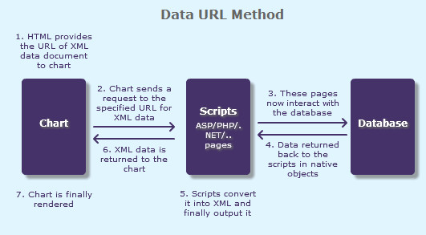
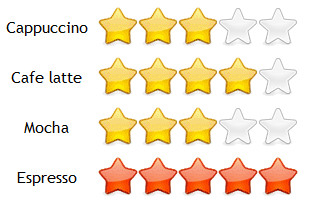
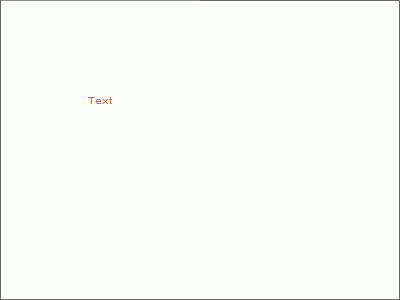

| Drawing Pad |
|
The drawing pad is a component which allows you to create only annotations, but not charts. Like all other charts in the suite, it accepts XML data and can be integrated with JavaScript. You can create any type of annotation on the pad and then apply Styles to it. You can effectively use the drawing pad to create the following:
A few outputs of Drawing Pac can be reproduced as under:   |
| Using the drawing pad |
The drawing pad can be found in Download Package > Charts > DrawingPad.swf. The drawing pad can be treated like any other chart, just that it draws only annotations and no charts. So when creating annotations in the drawing pad, you just have to write the annotations part of the XML enclosed within the <chart> and </chart> elements. Thus, the XML to create a text annotation in the drawing pad will look like: |
| The result will be: |
|  |
| To know more about how to create annotations using XML/JSON, please see the Annotations Section. |
| Drawing pad XML API |
|
Here, we will discuss about the objects available for drawing pad and the possible XML attributes. |
| Chart Objects | |||
|
Custom defined Styles can be applied to the chart objects listed below. The table contains the names of the chart objects, short descriptions, list of supported Styles and list of supported animation parameters. |
|||
| Object Name | Description | Features Supported | Animation Parameters Supported |
| BACKGROUND | Background refers to the background for entire drawing pad. |
|
|
| TOOLTIP | Tooltip for the annotation. |
|
| <chart> element: Functional Attributes |
|
These attributes let you control a variety of functional elements on the chart. For example, you can set background color of the chart, show or hide border of the chart. You can also set the background color for the tooltip of the annotations. |
| Attribute Name | Type | Description |
| animation | Boolean (0/1) | Whether to enable animations applied on the annotations and the chart background through the Styles feature. |
| clickURL | URL in FusionCharts format | The entire drawing pad can now act as a hotspot. Use this URL to define the hotspot link for the drawing pad. The link can be specified in FusionCharts Link Format. |
| manageResize Since v 3.2 |
Boolean (0/1) | Setting this attribute to 1, you can allow the drawing pad to automatically resize itself when the parent container of the drawing pad is resized. |
| bgColor | Color Code | This attribute sets the background color for the drawing pad. You can set any hex color code as the value of this attribute. To specify a gradient as background color, separate the hex color codes of each color in the gradient using comma. Example: FF5904, FFFFFF. Remember to remove # and any spaces in between. For more details see Using Gradients. |
| bgAlpha | Number (0-100) | Sets the alpha (transparency) for the background. If you've opted for gradient background, you need to set a list of alpha(s) separated by comma. For more details see Using Gradients. |
| bgRatio | Numbers separated by comma | If you've opted for a gradient background, this attribute lets you set the ratio of each color constituent. For more details see Using Gradients. |
| bgAngle | Number (0-360) | Angle of the background color, in case of a gradient. For more details see Using Gradients. |
| showBorder | Boolean (0/1) | Whether to show a border around the drawing pad or not? |
| borderColor | Color Code | Border color of the drawing pad. |
| borderThickness | Number (Pixels) | Border thickness of the drawing pad. |
| borderAlpha | Number (0-100) | Border alpha of the drawing pad. |
| showToolTip | Boolean (0/1) | Whether to show tooltip for the annotations? |
| toolTipBgColor | Color Code | Background Color for tooltip. |
| toolTipBorderColor | Color Code | Border Color for tooltip. |
The XML API for the following features have not been discussed here:
|